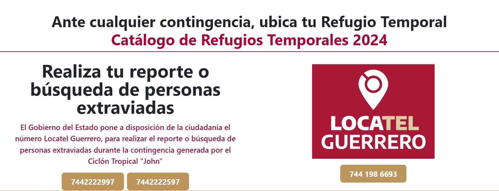
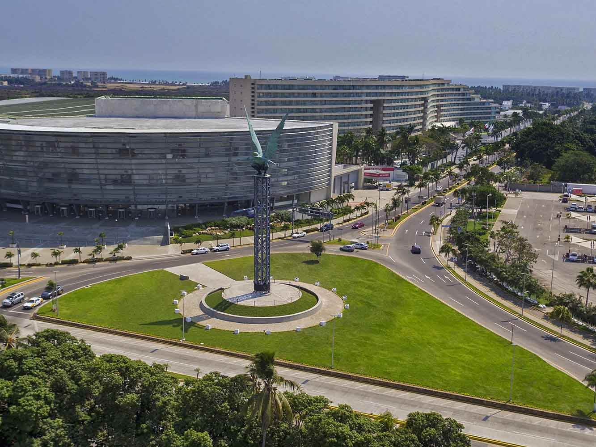
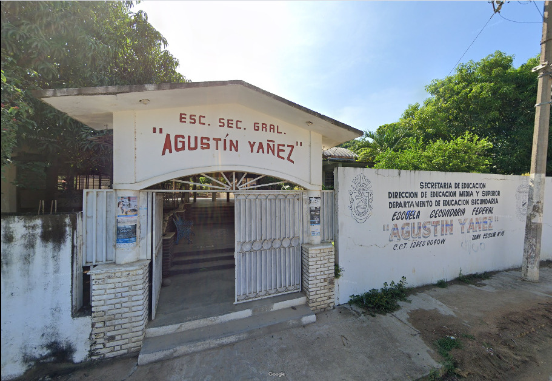
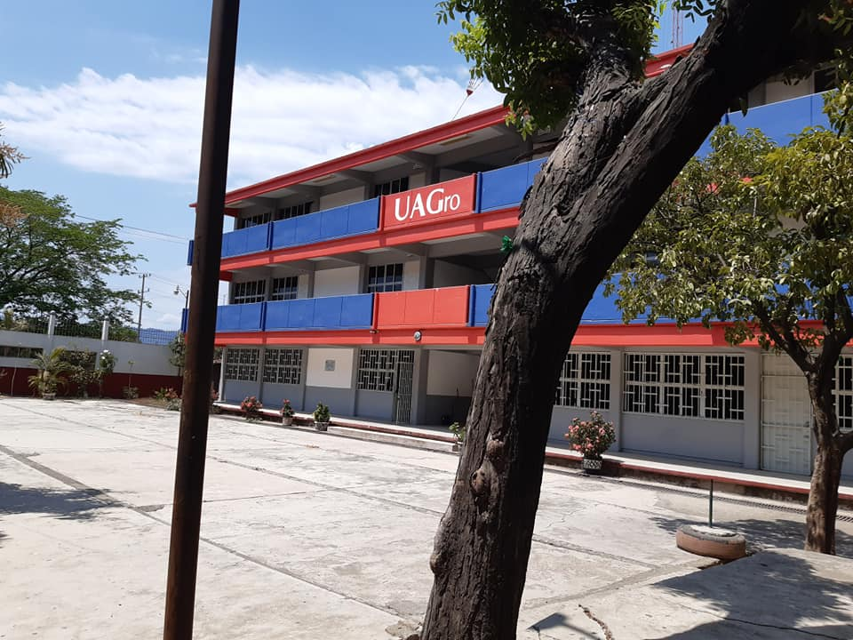
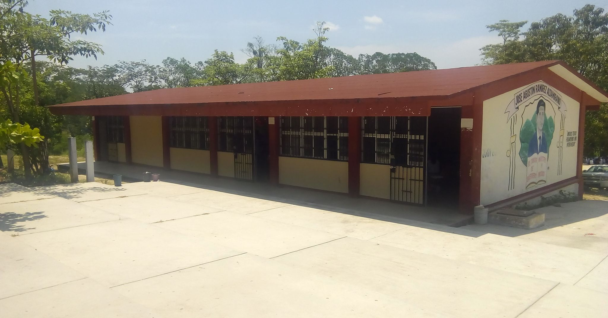
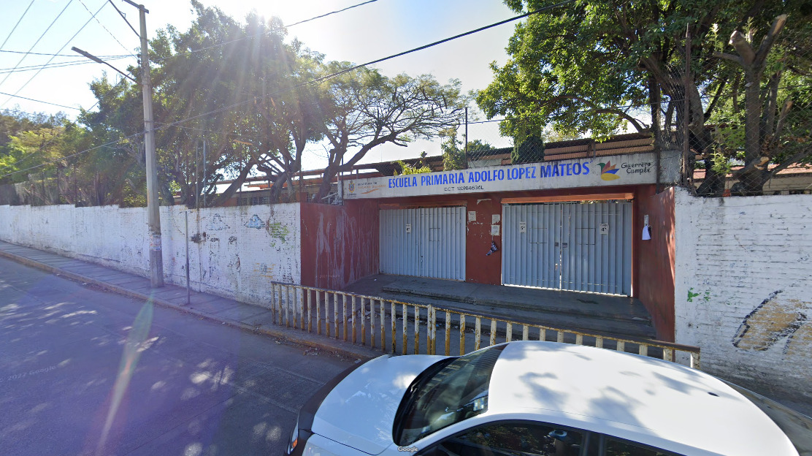
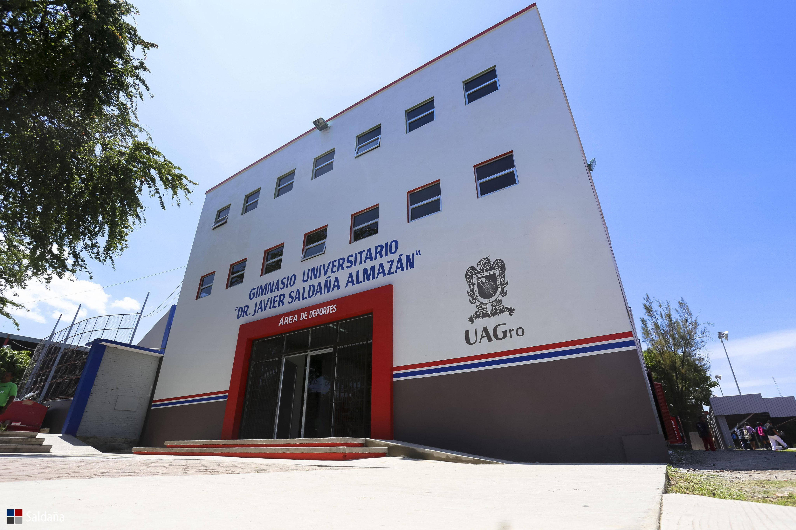

Nombre: Forum Mundo Imperial
Municipio: Acapulco de Juárez
Dirección: Blvd. de las Naciones s/n esq. Blvd. de Barra Vieja
Nombre: Esc. Prim. Emiliano Zapata
Municipio: Igualapa
Dirección: Sobre la carretera, San Juan de los llanos- Ometepeca

Nombre: Esc. Sec. Fed. Agustín Yáñez
Municipio: Coyuca de Benítez
Dirección: Calle Colima, Colonia Venustiano Carranza, Coyuca de Benítez

Nombre: Preparatoria No. 22
Municipio: Atoyac de Álvarez
Dirección: Col. Las Palmeras

Nombre: Esc. Sec. Téc. José Agustín Ramírez Altamirano No. 176
Municipio: Atoyac de Álvarez
Dirección: Km. 77, carretera nacional Acapulco-Zihuatanejo comunidad El Ciruelar
Nombre: Comisaría Ejidal
Municipio: Chilpancingo de los Bravol
Dirección: Calle Rafael Molina s/n, col. La Cancha, Ocotito

Nombre: Esc. Prim. Adolfo López Mateo
Municipio: Chilpancingo de los Bravol
Dirección: Av. Principal s/n, col. Omiltemi, Chilpancingo de los Bravo
